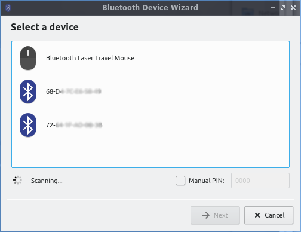
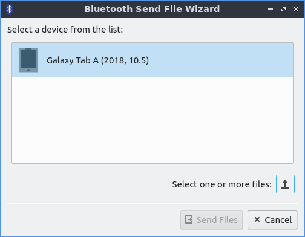

Chapter 2.1.4 Bluedevil and Bluetooth¶
Bluedevil is the default application to manage Bluetooth devices for Denios-OS.
Pairing¶
To launch Bluedevil to pair with a device from the menu or from the command line run
bluedevil-wizard
. If Bluetooth is disabled you will be asked to enable it. In the main part of the window will show detected Bluetooth devices under the heading Select a device. To choose a device to pair with left click on it. Click on the device you wish to add and press Next.
Next you will be asked if your pin matches on your device to pair it. If the pin matches press the Matches button. If the the pin does not match press the Does not match button.
Sending files¶
To send a file to another device after pairing with the device or from the command line run
bluedevil-sendfile
to open the file sending dialog. Then select the device you want to send a file to. Press the button with the upward pointing arrow to to bring a dialog of which files to transfer. To choose the file navigate to the path and select the Open button. To choose which device to sent a file select the device under Select a device from the list. Then to actually send the file press the Send files button. On a mobile device you may need to press a button to allow the file transfer.
Shortcomings¶
While Bluedevil can handle most basic operations, some tasks need to be completed via the command line. Here are some common tasks:
Listing Paired Devices¶
You can list the devices that are already paired by running the following:
$ bt-device -l
Added devices:
FOO BAR (00:11:22:33:44:55)
Connect to Paired Device Manually¶
To connect to FOO BAR, you would run:
$ bluetoothctl connect 00:11:22:33:44:55
Attempting to connect to 00:11:22:33:44:55
[CHG] Device 00:11:22:33:44:55 Connected: yes
Connection successful
Disconnect From Paired Device Manually¶
To disconnect from FOO BAR, you would run:
$ bluetoothctl disconnect 00:11:22:33:44:55
Attempting to disconnect from 00:11:22:33:44:55
[CHG] Device 00:11:22:33:44:55 ServicesResolved: no
Successful disconnected
More Commands¶
Running the following will give you many more options for configuration via the command line:
$ bluetoothctl -h
Version¶
Denios-OS ships with version 5.25.1 of Bluedevil.